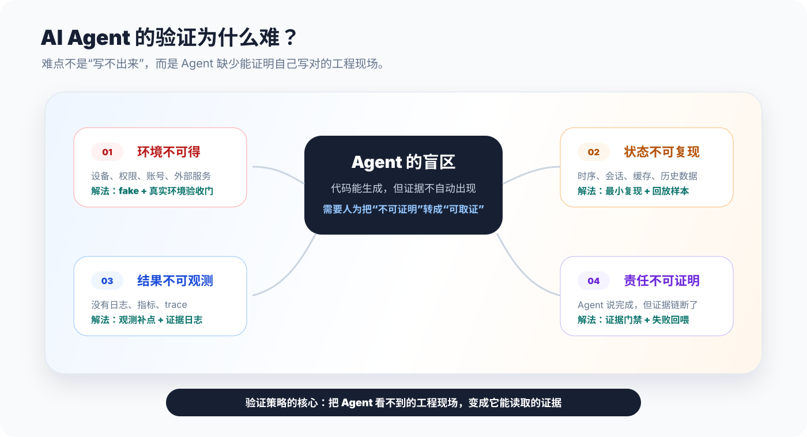
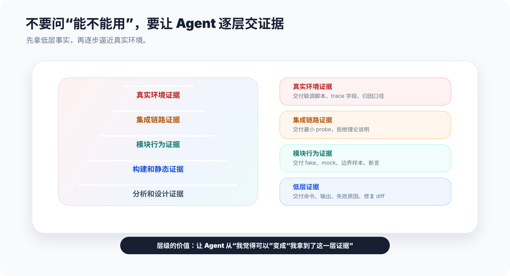
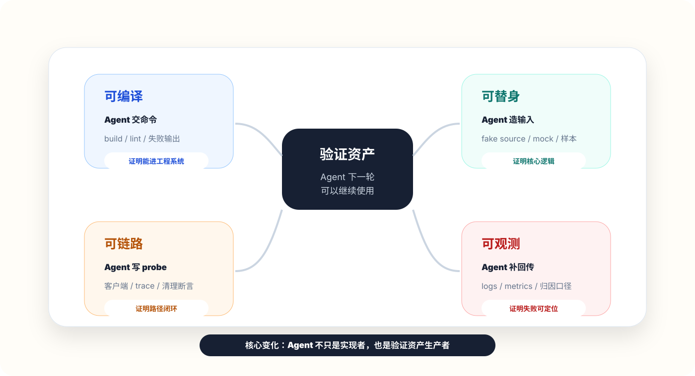
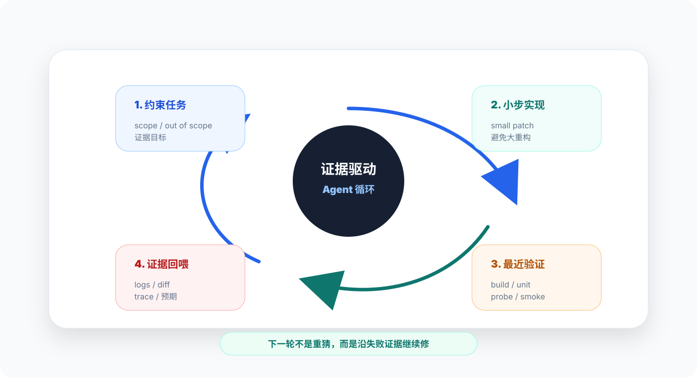
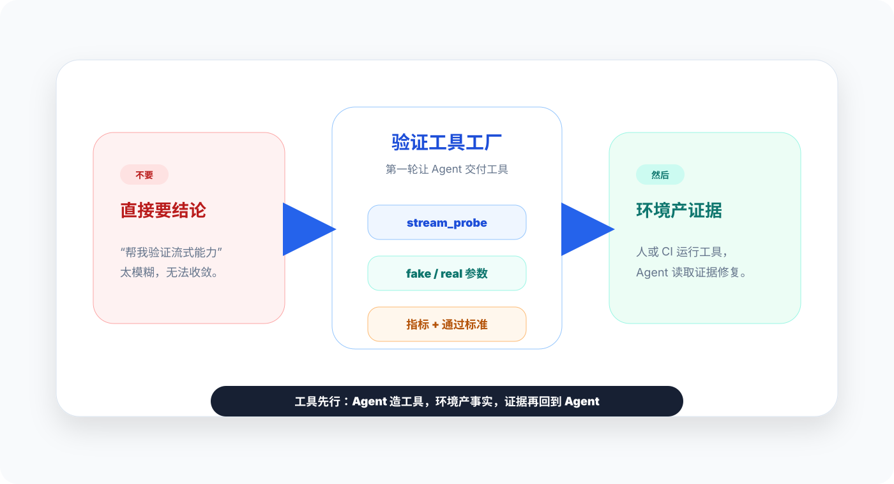
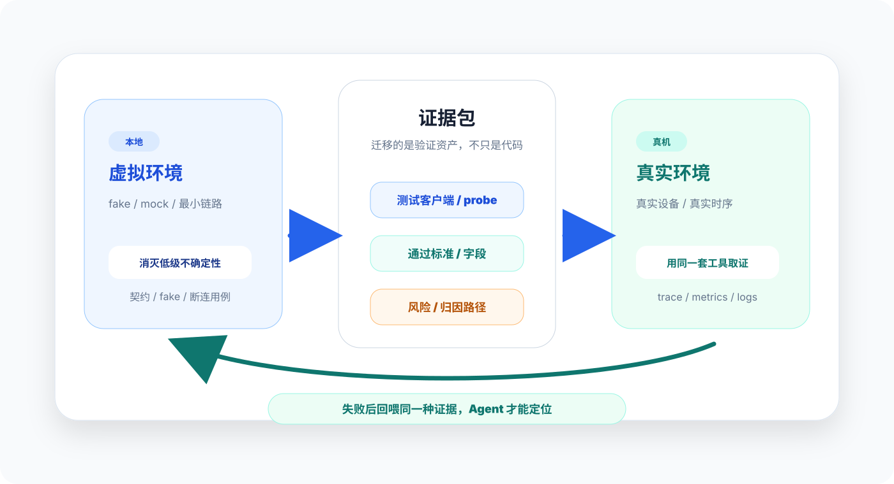
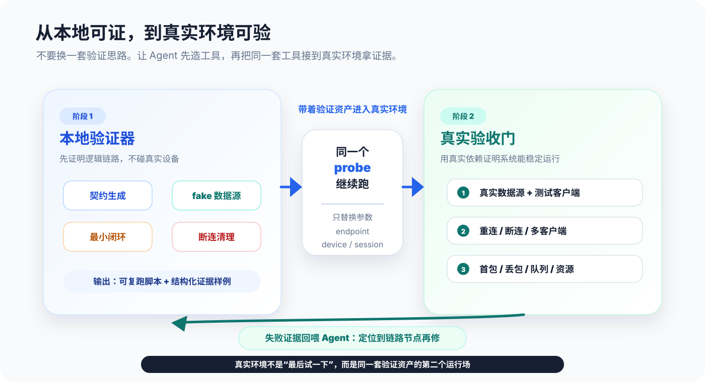
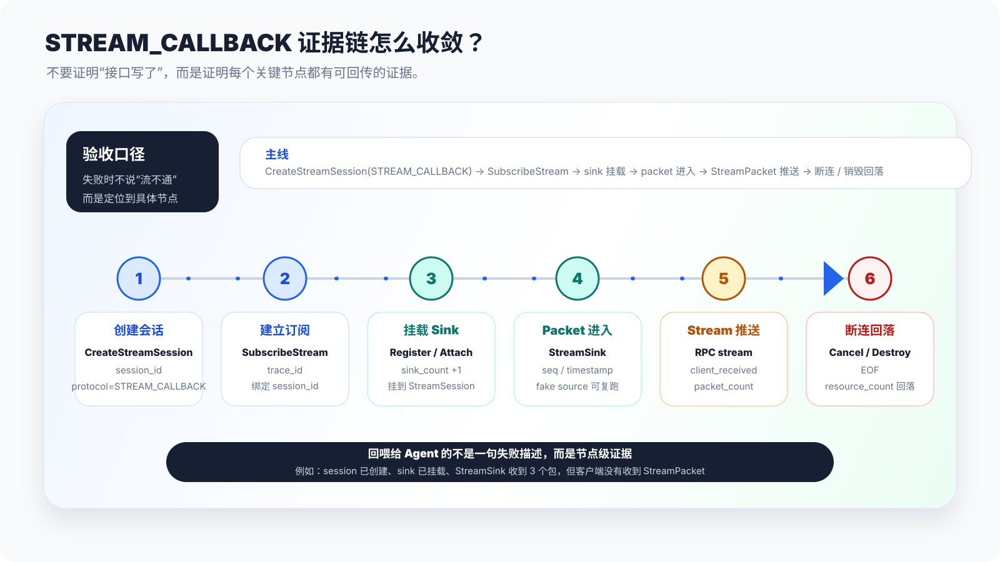
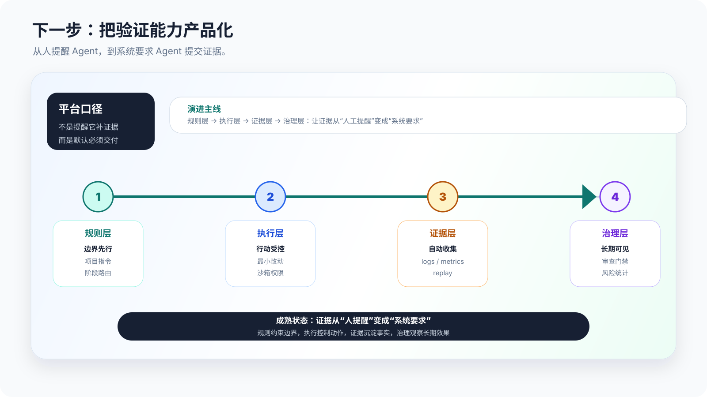

过去我们讨论 AI Agent，容易把重点放在"它能不能写代码"。但真正进入复杂工程后，我发现更关键的问题是：它写完以后，我们怎么证明这件事真的可用？
这篇文章的主角不是某套工作流，也不是某个工具，而是"验证"。因为 Agent 最大的价值，往往不是一次性写出完美代码，而是在失败、修复、再验证之间快速循环。问题在于，复杂环境下验证本身很难：真实依赖跑不起来，状态难复现，结果不可观测，简单测试又覆盖不了关键风险。
1. AI Agent 的验证为什么难
简单任务的验证通常很直接：跑单测、看输出、比对截图。但复杂工程不一样。一个新增能力可能要经过多个模块、多个调用方、多个运行状态，还可能依赖真实设备、外部服务、权限、数据流或时序行为。
这时，Agent 写代码不是最难的；最难的是证明它没有在关键路径上埋下隐患。

我把验证难题分成四类：环境不可得、状态不可复现、结果不可观测、责任不可证明。只要其中一个存在，Agent 就很容易停在"理论上可行"。而"理论上可行"在工程上不是完成，只是一个假设。
2. 第一步：不要追求一次性完整验证
很多验证困境来自一个错误期待：希望 Agent 一次性跑通真实环境。这个期待在复杂任务里经常不现实。真实环境可能需要硬件、权限、账号、线上配置、历史数据或复杂外部依赖，而 Agent 往往只能接触到其中一部分。
所以这里的"拆层"，不是为了讲测试理论，而是为了给 Agent 一个可执行的推进顺序：不要让它空口判断"能不能用"，而是要求它在当前可达环境里先交付一层证据。

对人来说，拆层是一种排查顺序；对 Agent 来说，它还会限制猜测空间。你不是听它说"我觉得可以"，而是让它拿出命令输出、fake 数据、最小链路脚本、trace 字段和失败判断口径。
这一步最重要的心态变化是：验证不是一个大开关，而是一串可以回喂给 Agent 的证据。证据越具体，Agent 下一轮越像在修一个已定位的问题，而不是重新生成一版看起来合理的代码。
3. 第二步：把"不可验证"拆成 Agent 可交付的资产
"不可验证"很多时候不是完全不能验证，而是缺少能把验证继续往前推的东西。真实设备、真实账号、真实数据流暂时不可得时，如果直接问 Agent "这个能不能证明"，它很容易给出一个看起来合理、但无法落地的判断。
更有效的问法是：现在这个环境里，Agent 能先交付哪些资产，让下一轮验证少一点不确定性？这样任务就从"证明最终正确"，变成"先生产可复用的证据材料"。

这张图不是四种测试，而是四种交付物
可编译不是为了证明业务正确，而是证明改动真的进入了工程系统；可替身不是为了"假装通过"，而是把不可控依赖变成可控输入；可链路不是多写一个单测，而是把跨模块路径压缩成一个可复跑的 probe；可观测也不是最后补几行日志，而是给真实环境失败预留回传入口。
判断一项资产有没有价值，只看一个问题：失败发生时，它能不能减少下一轮猜测？如果一个 build 输出能告诉 Agent 类型映射断在哪里，一个 fake source 能稳定复现边界输入，一个 probe 能说明数据卡在哪个节点，一个 trace id 能把真实失败串起来，它就是有用资产。
让 Agent 交付资产，要把任务说成"产物规格"
不要让 Agent 自己猜"验证到什么程度算够"。你要把验证要求写成产物规格：资产叫什么、放在哪里、怎么运行、预期产出什么证据、失败时能归因到哪几类问题。这样它交付的就不是一段自信描述，而是一组可以被人或 CI 继续使用的东西。
4. 第三步：操作 Agent 时，把任务改写成"实现 + 证据"
真正改变效果的，不是让 Agent 多写几行代码，而是改变我们给任务的方式。不要只说"实现这个功能"，而要说清楚"实现以后用什么证明它是对的"。

第一轮：让 Agent 先列验证风险，不写代码
让它回答：哪些路径本地能验证？哪些路径需要替身？哪些路径必须等真实环境？哪些行为需要额外日志？这一步会把"验证盲区"提前暴露出来。
第二轮：把每个风险改写成证据目标
例如"流式订阅可能断连异常"不要只写成风险，而要写成证据目标：断连后只清理订阅资源，底层会话继续存在，并且日志里能看到清理动作。
第三轮：让 Agent 小步实现，每步跑最近验证
大任务一次改完，失败时很难定位。更好的方式是：接口定义、类型映射、生命周期、最小链路、观测点分步做。每一步只扩大一点点验证范围。
第四轮：把失败日志喂回 Agent，而不是让它重新猜
Agent 最容易浪费时间的地方，是没有证据时反复猜。每次验证失败，都把命令、日志、diff、预期行为一起给它。让它基于证据修复，而不是重新生成一版看起来合理的代码。
5. 一个真实场景：如何打破"流式能力"的验证困难
举一个抽象后的真实场景：给既有服务新增一条流式能力，让新调用方持续接收数据，同时旧调用方不受影响。这个需求看起来像"新增一个接口"，但真正麻烦的是验证。
普通接口很好验证：发一个请求，拿一个响应，断言字段对不对。流式能力不一样，它要验证的是一段生命周期：订阅建立、首包到达、持续推送、断连清理、资源保持、真实环境下不积压。

这类场景如果直接让 Agent "实现并验证"，它大概率会跑到两个极端：要么只证明接口能编译，要么试图完整启动真实环境然后卡住。更稳的做法是：先让 Agent 把验证工具造出来，再让工具去产生证据。
stream_probe 测试客户端，支持 fake/real 两种模式，输出 JSONL 指标。指标至少包含 trace_id、first_packet_ms、packet_count、seq_gap、queue_depth、disconnect_reason、active_subscription_count。"
契约先行
- 验什么
- 新增接口是否可生成，错误码是否完整，旧调用路径是否不受影响。
- 怎么验
- 让 Agent 补契约测试和旧路径回归，不碰真实数据源。
- 通过标准
- 旧接口仍可用，新接口可生成，失败场景能被明确表达。
fake 数据源
- 验什么
- 字段映射、序号、时间戳、空包、异常包、超大包。
- 怎么验
- 让 Agent 构造固定数据源，并挂到
stream_probe --mode fake。 - 通过标准
- 每个包都能被正确转换，顺序递增，异常可被识别。
最小订阅闭环
- 验什么
- 订阅能建立，首包能到，连续包顺序稳定。
- 怎么验
stream_probe --mode fake驱动 3 条数据，测试客户端必须收到 3 条。- 通过标准
- 首包时间可记录，包序号可断言，结束时触发清理。
断连清理
- 验什么
- 客户端断开后，清理正确资源，保留正确资源。
- 怎么验
- 模拟取消订阅、异常退出、重复订阅。
- 通过标准
- 订阅对象被移除，底层任务不被误销毁，重复订阅无脏数据。
真实环境集成验证怎么做
本地证据只能证明"逻辑大概率没错"，不能替代真实环境。这里最容易断掉的是通路：虚拟环境里跑过的东西，到了真实环境不知道怎么接；真实环境里失败了，又不知道怎么回到 Agent 那里修。

这里不需要把真实环境讲成另一套流程。更自然的做法是：本地那一轮产出的验证器不要丢，真机联调时继续用它，只把 fake 数据源换成真实设备，把服务地址、设备 id 和会话参数补进去。这样失败时拿到的还是同一种证据，而不是一堆新的、无法比较的日志。
先把验证器做出来
- 做什么
- 准备 fake 数据源、契约测试、最小订阅闭环、断连清理用例，以及
stream_probe的本地模式。 - 留下什么
- 测试客户端、通过标准、观测字段清单、已知风险清单和结构化输出样例。
复用验证器做联调
- 怎么接
- 不重写工具，只替换服务地址、设备 id、会话配置和运行时长，接到真实设备上跑。
- 看什么
- 真实订阅记录、首包耗时、包数量、序号缺口、队列长度、断连原因、资源计数。
用同一种证据定位
- 少说
- 不要只说"真实环境不通"，这对 Agent 几乎没有帮助。
- 多给
- 把 trace id、联调脚本、失败时间点、关键日志、指标截图或导出数据回喂给 Agent，让它判断失败发生在契约、数据、链路、断连还是真实依赖。
所以真实环境验证不是上线后观察一下，而是准备一套能重复执行的联调脚本和指标看板。

用测试客户端和指标验证系统真的能跑
- 准备什么
- 一个可重复执行的测试客户端；每次订阅带 trace id；服务端记录订阅 id、首包时间、队列长度、推送失败次数、断连原因、资源计数。
- 跑哪些场景
- 正常订阅一段时间、客户端主动断开、客户端异常退出、快速重连、多客户端并发、真实数据源抖动。
- 看哪些指标
- 首包耗时、收到包数量、序号缺口、重复包、队列积压、推送失败、断连后资源数是否回落。
- 怎么判定通过
- 关键指标在预设阈值内；断连后没有资源泄漏；旧调用路径无回归；出现失败时能用 trace id 定位到具体阶段。

回到这个抽象场景，最后真正收敛的不是一句"SubscribeStream 已实现"，而是一条可复跑、可定位、可回传给 Agent 的证据链。
stream_service.proto 生成和构建记录stream_probe + evidence.jsonlStreamSessionStreamSinkStreamPacket这张表不用读成测试清单，而要读成给 Agent 的工作单：每个风险都必须落到一个可运行的交付物和一个可观察的通过信号。真实环境失败时，我们就能说"卡在 sink 到 stream 这一段"，而不是只说"流式能力不通"。
6. 展望：成熟的 Agent 工程化会变成"证据工程"
我不太想把这一节写成"谁家工具怎么做"。更准确地说，很多实践都在指向同一个方向：未来成熟的 Agent 工程化，不只是更强的模型，而是更强的验证系统。

项目级指令会告诉 Agent 要遵守什么规则；沙箱和权限会限制它能做什么；验证门禁会要求它提交可观察证据；安全审查会关注依赖、配置、提示注入和生成测试的可信度；指标系统会帮助团队判断 AI 到底是减少了返工，还是只是更快地产生了更多不确定改动。
也就是说，Agent 工程化的终点不只是"自动写代码"，而是"自动围绕代码建立证据"。
结尾：验证能力，才是 Agent 落地的地基
Agent 写代码的能力会继续变强，但复杂工程不会因此自动变简单。真正决定它能不能进入团队日常的，是我们有没有办法证明它写出来的东西是可靠的。
参考资料
OpenAI Codex AGENTS.md：项目级指令和目录级覆盖规则。
Claude Code Best Practices：探索、计划、实现和可运行验证的 Agent 实践。